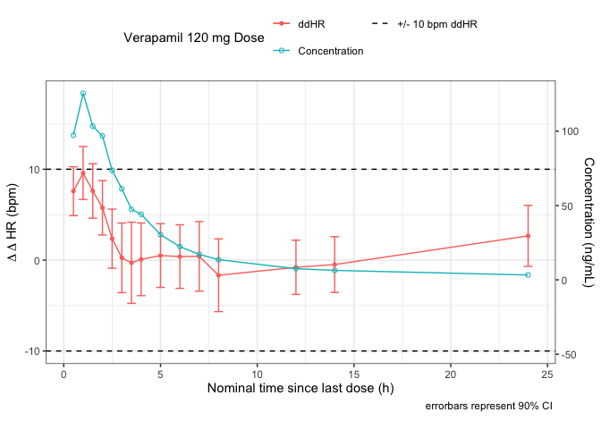
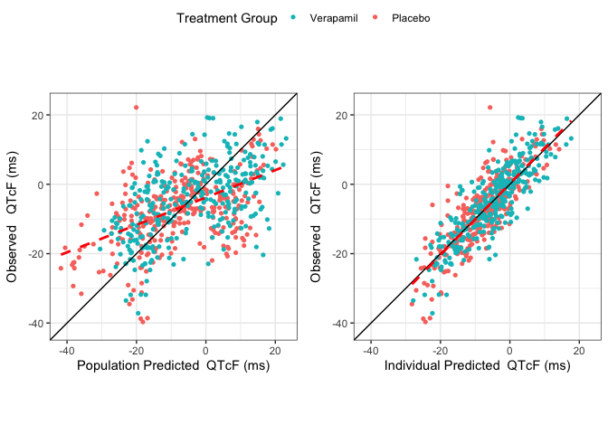
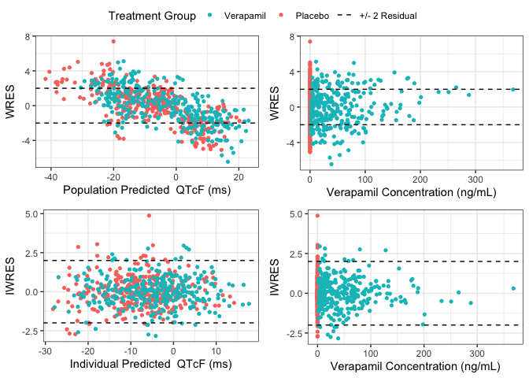
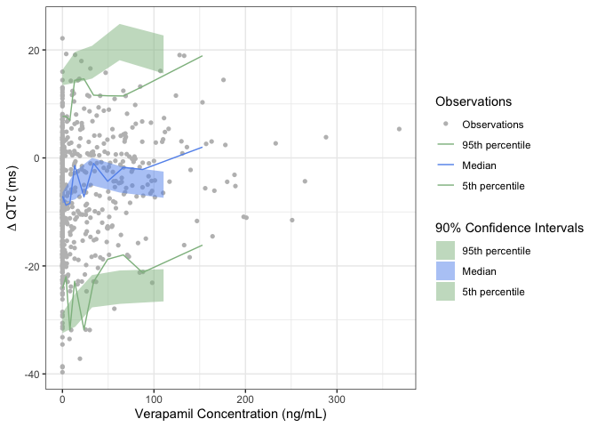

pak::pkg_install("a2-ai/cqtkit")cqtkit 

cqtkit makes C-QTc analysis straightforward — enabling users to explore data, validate key assumptions from the white paper, fit and assess the pre-specified model with comprehensive goodness-of-fit plots, and generate relevant exposure–response predictions.
Installation
You can install the development version of cqtkit from GitHub with:
Documentation
The documentation site for cqtkit can be found here.
library(cqtkit)
library(dplyr)
library(gt)Preprocessing of C-QT datasets
cqtkit provides preprocessing functions to help compute derived ECG parameters during data assembly. The preprocess function can be used to compute baseline corrected ECG parameter values as well as mean baseline values from the following raw column names:
- QT, QTBL
- RR, RRBL
- HR, HRBL
The included cqtkit_data_<drug> datasets already contain preprocessed data that have been averaged across replicates, so they include many of the derived columns that preprocess() would typically create. However, preprocess() can still be useful to compute any missing derived parameters.
data_proc <- cqtkit_data_verapamil %>% preprocess()
new_cols <- setdiff(names(data_proc), names(cqtkit_data_verapamil))
cat(paste(new_cols, collapse = ", "), "\n")
#> deltaQTCB, deltaQTCF, deltaRR, deltaHR, deltaQTExploratory Data Analysis with cqtkit
cqtkit provides extensive EDA functions for C-QT datasets to validate key assumptions from the Scientific White Paper on concentration-QTc modeling.
Drug Effect on Heart Rate
eda_mean_dv_over_time(
data = data_proc,
dv_col = deltaHR,
ntime_col = NTLD,
dosef_col = DOSEF,
reference_dose = "0 mg",
reference_threshold = c(-10, 10),
secondary_data_col = CONC,
group_col = TRTG,
conf_int = 0.9,
style = set_style(
ylabel = bquote(Delta ~ Delta ~ "HR (bpm)"),
legend = "Verapamil 120 mg Dose",
labels = c(
"120 mg Verapamil HCL deltaHR" = "ddHR",
"120 mg Verapamil HCL CONC" = "Concentration",
"Reference -10" = "+/- 10 bpm ddHR",
"Reference 10" = NA
),
legend.position = "top",
legend.title.position = "left",
legend_nrow = 2
)
)
QTc Correction
bl <- cqtkit_data_bl_verapamil %>% compute_qtcb_qtcf(qtbl_col = NULL, rrbl_col = NULL)
eda_qtc_comparison_plot(
data = bl,
rr_col = RR,
qt_col = QT,
qtcb_col = QTCB,
qtcf_col = QTCF,
style = set_style(
caption_hjust = "left"
)
)
Hysteresis
eda_hysteresis_loop_plot(
data_proc,
NTLD,
deltaQTCF,
CONC,
DOSEF,
reference_dose = "0 mg",
style = set_style(
ylabel = bquote(Delta ~ Delta ~ "QTcF (ms)"),
xlabel = "Verapamil Plasma Concentration (ng/mL)",
legend.position = "none"
)
)
Linearity of Concentration-QTc Relationship
eda_scatter_with_regressions(
data_proc,
ydata_col = deltaQTCF,
xdata_col = CONC,
loess_line = TRUE,
linear_line = TRUE,
span = 0.90,
trt_col = TRTG,
style = set_style(
ylabel = bquote(Delta ~ "QTcF (ms)"),
xlabel = "Verapamil Concentration (ng/mL)",
labels = c(
"Verapamil HCL" = "Verapamil"
),
legend.position = "top",
legend.title.position = "left",
legend_nrow = 2
)
)Modeling
cqtkit fits the prespecified linear mixed-effects model from the Scientific White Paper using the nlme package.
dqtc_model <- fit_prespecified_model(
data_proc,
dv_col = deltaQTCF,
id_col = ID,
conc_col = CONC,
delta_bl_col = deltaQTCFBL,
trt_col = TRTG,
tafd_col = TAFD,
remove_conc_iiv = FALSE
)
tabulate_model_fit_parameters(
dqtc_model,
trt_col_name = "TRTG",
tafd_col_name = "TAFD",
conf_int = 0.9,
decimals = 2,
title = "Fixed-Effect Estimates for ΔQTcF Model"
) %>%
tab_source_note(
source_note = "Additive Residual error model with IIV on intercept and slope"
) %>%
as_raw_html()| Fixed-Effect Estimates for ΔQTcF Model | ||
|---|---|---|
| Parameters | Estimate [90% CI] | p-value |
| Additive Residual error model with IIV on intercept and slope | ||
Goodness-of-Fit Evaluation
cqtkit has several Goodness-of-Fit functions for validating fitted models
gof_plots(
data = data_proc,
fit = dqtc_model,
dv_col = deltaQTCF,
conc_col = CONC,
ntime_col = NTLD,
trt_col = TRTG,
conc_xlabel = "Verapamil Concentration (ng/mL)",
legend_location = "top",
style = set_style(
labels = c(
"Verapamil HCL" = "Verapamil"
),
legend.title.position = "left"
)
)
gof_concordance_plots(
data = data_proc,
fit = dqtc_model,
dv_col = deltaQTCF,
conc_col = CONC,
ntime_col = NTLD,
trt_col = TRTG,
dv_label = "QTcF (ms)",
legend_location = "top",
style = set_style(
labels = c(
"Verapamil HCL" = "Verapamil",
"Placebo" = "Placebo",
"Reference 2" = "+/- 2 Residual",
"Reference -2" = NA
),
legend.title.position = "left"
)
)
gof_residuals_plots(
data = data_proc,
fit = dqtc_model,
dv_col = deltaQTCF,
conc_col = CONC,
ntime_col = NTLD,
trt_col = TRTG,
dv_label = "QTcF (ms)",
conc_xlabel = "Verapamil Concentration (ng/mL)",
legend_location = "top",
style = set_style(
labels = c(
"Verapamil HCL" = "Verapamil",
"Placebo" = "Placebo",
"Reference 2" = "+/- 2 Residual",
"Reference -2" = NA
),
legend.title.position = "left"
)
)
gof_vpc_plot(
data_proc,
dqtc_model,
CONC,
deltaQTCF,
style = set_style(
xlabel = "Verapamil Concentration (ng/mL)"
)
)
#> Warning in compute_quantiles_obs_df(data, !!xdata, !!dv, conf_int = conf_int, :
#> Your xdata quantiles had duplicates. Filtering for x values > 0
Exposure Predictions
cqtkit can use a fitted model and make predictions of ΔΔQTc at relevant exposures
conc_for_10_ms <- compute_conc_for_upper_pred(
data_proc,
dqtc_model,
"CONC",
"TRTG",
"Verapamil HCL"
)$lower_conc
stpx_cmax <- max(compute_pk_parameters(
data_proc %>% dplyr::filter(TRTG != "Placebo"),
ID,
DOSE,
CONC,
NTLD,
TRTG
)[, "Cmax_gm"])predict_with_exposure_plot(
data_proc,
dqtc_model,
CONC,
treatment_predictors = list(
TRTG = "Verapamil HCL",
TAFD = "1 HR",
deltaQTCFBL = 0
),
control_predictors = list(
TRTG = "Placebo",
TAFD = "1 HR",
CONC = 0,
deltaQTCFBL = 0
),
conf_int = 0.9,
cmaxes = c(2 * stpx_cmax, stpx_cmax, conc_for_10_ms),
reference_threshold = 10,
style = set_style(
xlabel = "Verapamil Plasma Concentration (ng/mL)",
ylabel = bquote(Delta ~ Delta ~ "QTcF (ms)"),
colors = c(
"Cmax_228.46" = "red",
"Cmax_152.19" = "brown",
"Cmax_114.23" = "skyblue"
),
labels = c(
"Cmax_228.46" = "2 x Supratherapeutic dose exposure",
"Cmax_114.23" = "Supratherapeutic dose exposure",
"Cmax_152.19" = "Exposure for predicted 10 ms",
"Reference 10" = "10 ms ddQTcF",
"90% CI" = "Model derived 90% CI"
),
fill_legend = ""
)
)
tabulate_exposure_predictions(
data_proc,
dqtc_model,
CONC,
treatment_predictors = list(
TRTG = "Verapamil HCL",
TAFD = "1 HR",
deltaQTCFBL = 0
),
control_predictors = list(
TRTG = "Placebo",
TAFD = "1 HR",
deltaQTCFBL = 0,
CONC = 0
),
conf_int = 0.9,
doses = c(120, "*"),
cmaxes = c(stpx_cmax, conc_for_10_ms),
conc_units = "ng/mL",
scientific = FALSE,
title = "ΔΔQTcF Predictions"
) %>%
tab_source_note(
source_note = gt::md("\\* Computed C~max~ for upper 90% CI to reach 10 ms")
) %>%
as_raw_html()| ΔΔQTcF Predictions | |||
|---|---|---|---|
| Dose | Cmax (ng/mL) | Δ Δ QTc (ms) | [90% CI] |
| * Computed Cmax for upper 90% CI to reach 10 ms | |||
References
Scientific White Paper on concentration-QTc modeling
Garnett C, Bonate PL, Dang Q, Ferber G, Huang D, Liu J, Mehrotra D, Riley S, Sager P, Tornoe C, Wang Y. Scientific white paper on concentration-QTc modeling. J Pharmacokinet Pharmacodyn. 2018 Jun;45(3):383-397. doi: 10.1007/s10928-017-9558-5. Epub 2017 Dec 5. Erratum in: J Pharmacokinet Pharmacodyn. 2018 Jun;45(3):399. doi: 10.1007/s10928-017-9565-6. PMID: 29209907.
Data was originally made available in the following publication
Johannesen L, Vicente J, Mason JW, Sanabria C, Waite-Labott K, Hong M, Guo P, Lin J, Sørensen JS, Galeotti L, Florian J, Ugander M, Stockbridge N, Strauss DG. Differentiating Drug-Induced Multichannel Block on the Electrocardiogram: Randomized Study of Dofetilide, Quinidine, Ranolazine, and Verapamil. Clin Pharmacol Ther. 2014 Jul 23. doi: 10.1038/clpt.2014.155.
and obtained from Physionet
Goldberger, A., Amaral, L., Glass, L., Hausdorff, J., Ivanov, P. C., Mark, R., … & Stanley, H. E. (2000). PhysioBank, PhysioToolkit, and PhysioNet: Components of a new research resource for complex physiologic signals. Circulation [Online]. 101 (23), pp. e215–e220. RRID:SCR_007345.